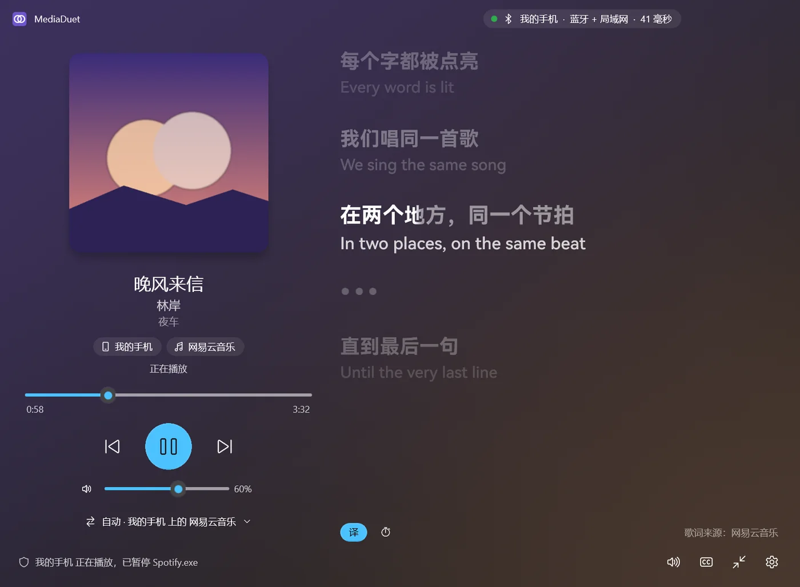
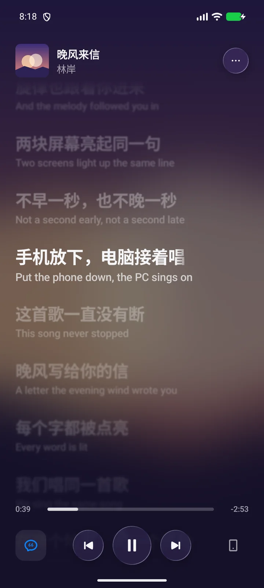
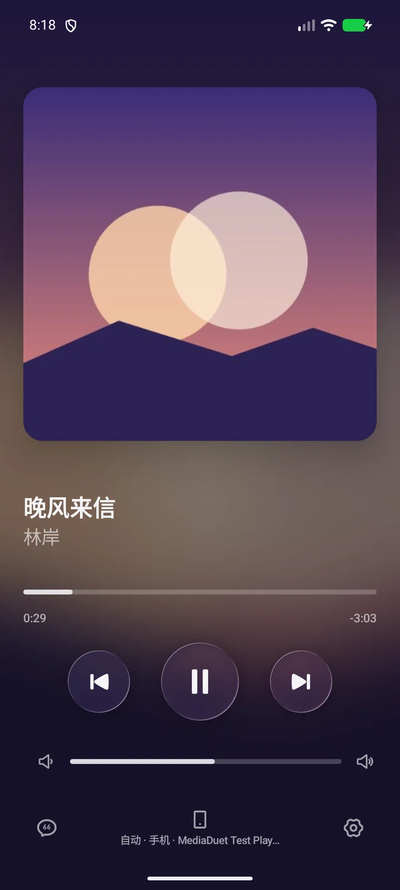
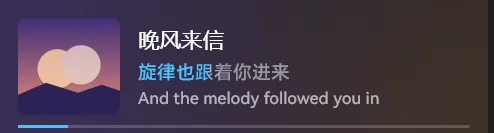
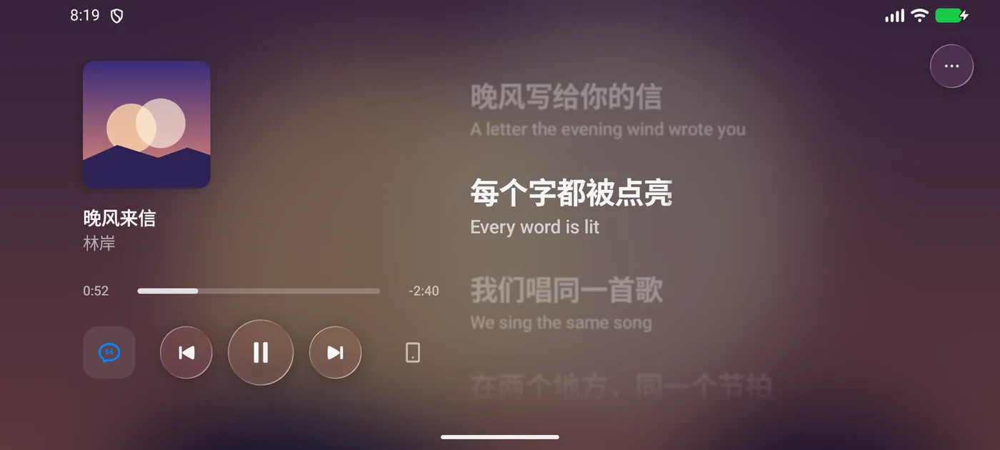
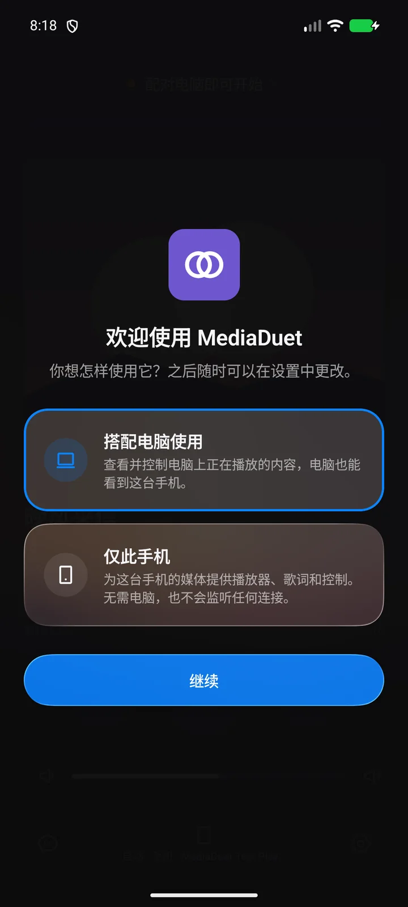

手机和电脑， 唱同一首歌。
MediaDuet 让 Android 手机和 Windows 电脑互相看见对方正在放的音乐，互相控制；一边开始播放，另一边自动让路；歌词在手机、电脑、桌面和任务栏上同时逐字亮起。
免费开源，MIT 许可。当前版本 1.7.0


两边都看得见，也都管得了
在手机上看电脑正在放什么：封面、歌名、进度，一清二楚。暂停、切歌、拖动进度、调电脑音量，直接在手机上完成。反过来，电脑也能这样控制手机。
支持网易云音乐、QQ 音乐、Spotify、浏览器等所有接入系统媒体控制的播放器。


一边开始放，另一边自动让路
戴着同一副耳机，在电脑上点开视频，手机上的音乐会自己暂停；视频停了，音乐再接着放。谁优先、什么时候恢复，都可以自己定。
- 手机正在播放《晚风来信》
- 电脑打开了一段视频
- 手机自动暂停
- 电脑视频播完，安静下来
- 手机接着刚才的地方继续
歌词，出现在你正看着的地方
桌面歌词浮在所有窗口之上，任务栏里也有一行；手机和电脑的播放页里，歌词随着演唱一个字一个字地亮起。连着蓝牙耳机时，会自动补上声音的延迟。
歌词来自网易云音乐、QQ 音乐和 LRCLIB，只用歌名、歌手和时长去匹配；手机不连电脑也能自己找到歌词。

只有一台设备，也能用
第一次打开时选择「仅此手机」或「仅此电脑」，MediaDuet 就是一个带同步歌词的播放控制器，不监听任何连接。以后想配对，在设置里切换即可。
配对后，两端会显示对方的版本号；版本不一致时会提醒你更新。

三步开始
-
两边都装上
电脑装 Windows 版，手机装 Android 版，并在手机上允许读取媒体信息。
-
在电脑上配对
电脑上打开「设置 › 设备」，选中你的手机；手机在同一 Wi-Fi 或已通过蓝牙连接即可被找到。
-
核对六位数字
两边显示同样的六位数字，确认后就连上了。之后它们会自己重连。
只在你的两台设备之间
- 手机和电脑之间的连接端到端加密，配对密钥只存在这两台设备上。
- 不读取通知内容，也没有账号、服务器或统计。
- 查找歌词和封面时，只发送歌名、歌手、专辑和时长；可以在设置里关掉。
下载
请让手机和电脑使用相同的版本。